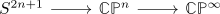
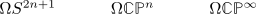
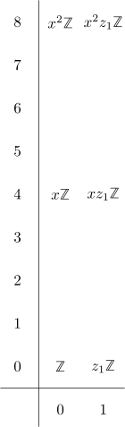

integral homology ring of loop space of the complex projective space
Proposition
Let $n \geq 2$, then the homology ring of $\Omega \mathbb{C}\mathbb{P}^n$ is given by
\begin{align*}
H_*(\Omega \mathbb{C}\mathbb{P}^n) = \mathbb{Z}[z_{2n \cdot m}, z_{2n \cdot m +1}]
\end{align*}
together with the multiplacation
\begin{align*}
z_{2n \cdot m} \cdot z_{2n \cdot m' + l} = z_{2n \cdot (m + m') + l}
\end{align*}
Proof
assuming fiber sequence of the inclusion of CP^n into CP infinity is true: consider the fiber sequence

resp.

Then since $S^1$ has the trivial multiplicative structure (for degree reasons) and $\Omega S^{2n+1}$ homological serre spectral sequence is multiplicative for monoids
Now writing down the spectral sequence (e.g. for $n =2$ gives

where all differentials are trivial for degree reasons.
Now under the kunneth iso (???) the multiplicative structure of the $E_2$ page maps generators to generators.
Hence